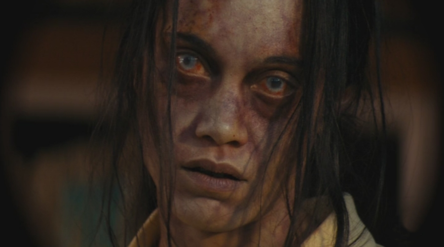
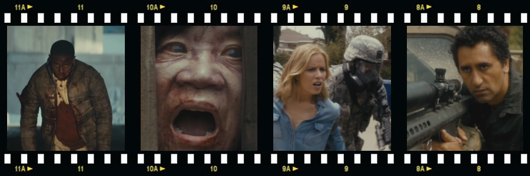

ear the Walking Dead is a post-apocalyptic horror drama television series created by Robert Kirkman and Dave Erickson as a prequel, and at the same time companion series, to The Walking Dead television show, based on the comic book series of the same name by Robert Kirkman, Tony Moore and Charlie Adlard. After the runaway success of his, now eponymous, zombie-bashing television show, Robert Kirkman came up with the idea to further explore, and expand on, The Walking Dead universe in a different setting and with a new set of characters. AMC embraced the idea with great enthusiasm and decided to develop it into a companion television series. The pilot episode was filmed in Los Angeles, with the remaining episodes of the first season filmed in Vancouver, British Columbia, and production moved to Baja California, Mexico for the second season. The show premiered with the 6-episode ‘taster’ mini-series on AMC in August 2015.
As opposed to the mentioned The Walking Dead TV series, where sheriff deputy Nick Grimes (portrayed by English actor Andrew Lincoln) wakes up from coma and finds himself pretty much bang on in the middle of the ongoing zombie apocalypse, Fear the Walking Dead sets out to explore the events leading to the outbreak of the zombie infection that would spread like wildfire through the continental United States and cause the rapid breakdown of social order and collapse of civilization as depicted in the aforementioned The Walking Dead TV show.
What people don’t get, when civilization ends, it ends fast.
Set in Los Angeles, California, the series follows a dysfunctional family composed of high school guidance counsellor Madison Clark (Kim Dickens), her English teacher boyfriend Travis Manawa (Cliff Curtis) and her children, daughter Alicia (Alycia Debnam-Carey) and drug-addicted son Nick (Frank Dillane), as well as Travis’s son from a previous marriage, Chris (Lorenzo James Henrie), at the onset of the zombie apocalypse. This group of disparate and imperfect people must try and overcome their differences and deep flaws as they come to terms with the impending collapse of civilization, and once again pull together as a family if they are going to survive in this new, unforgiving world.

Though a zombie apocalypse is highly unlikely and will in all probability never wreak havoc on our world, there are numerous other events (global pandemic being only one of them) which could lead to the breakdown of society, constantly reminding us how fragile our civilization really is and how thin is the layer of our humane culture. Someone wise once stated that the only thing that separates a law-abiding citizen from a ruthless criminal, willing to do anything, is three meals. As geeky high school senior student Tobias (Lincoln A. Castellanos), in the series said: “…what they don’t get, when civilization ends, it ends fast.” – Now, if you will excuse me, I am off to Tescos to stock up on canned beans, bottled water and matches.
Fear the Walking Dead will return for its second season of 15 episodes in April 2016.